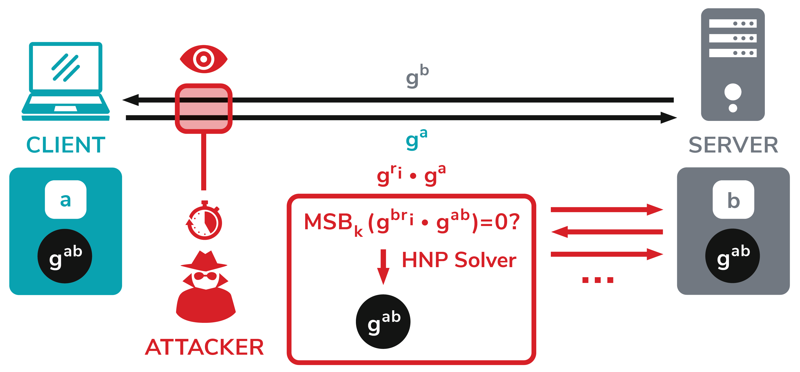

Raccoon is a timing vulnerability in the TLS specification that affects HTTPS and other services that rely on SSL and TLS. These protocols allow everyone on the Internet to browse the web, use email, shop online, and send instant messages without third-parties being able to read the communication.
Raccoon allows attackers under certain conditions to break the encryption and read sensitive communications. The vulnerability is really hard to exploit and relies on very precise timing measurements and on a specific server configuration to be exploitable.
Diffie-Hellman (DH) key exchange is a well-established method for exchanging keys in TLS connections. When using Diffie-Hellman, both TLS peers generate private keys at random (a and b) and compute their public keys: ga mod p and gb mod p. These public keys are sent in the TLS KeyExchange messages. Once both keys are received, both the client and server can compute a shared key gab mod p - called premaster secret - which is used to derive all TLS session keys with a specific key derivation function.
Our Raccoon attack exploits a TLS specification side channel; TLS 1.2 (and all previous versions) prescribes that all leading zero bytes in the premaster secret are stripped before used in further computations. Since the resulting premaster secret is used as an input into the key derivation function, which is based on hash functions with different timing profiles, precise timing measurements may enable an attacker to construct an oracle from a TLS server. This oracle tells the attacker whether a computed premaster secret starts with zero or not. For example, the attacker could eavesdrop ga sent by the client, resend it to the server, and determine whether the resulting premaster secret starts with zero or not.
Learning one byte from a premaster secret would not help the attacker much. However, here the attack gets interesting. Imagine the attacker intercepted a ClientKeyExchange message containing the value ga. The attacker can now construct values related to ga and send them to the server in distinct TLS handshakes. More concretely, the attacker constructs values gri*ga, which lead to premaster secrets gri*b*gab. Based on the server timing behavior, the attacker can find values leading to premaster secrets starting with zero. In the end, this helps the attacker to construct a set of equations and use a solver for the Hidden Number Problem (HNP) to compute the original premaster secret established between the client and the server.
Raccoon Attack: Finding and Exploiting Most-Significant-Bit-Oracles in TLS-DH(E). Robert Merget, Marcus Brinkmann, Nimrod Aviram, Juraj Somorovsky, Johannes Mittmann, and Jörg Schwenk.
Probably not. Raccoon is a complex timing attack and it is very hard to exploit. It requires a lot of stars to align to decrypt a real-world TLS session. There are, however, exceptions.
In the case the (rare) circumstances are met, Raccoon allows an attacker to decrypt the connection between users and the server. This typically includes, but is not limited to, usernames and passwords, credit card numbers, emails, instant messages, and sensitive documents.
The attack generally targets the Diffie-Hellman key exchange in TLS 1.2 and below. There are two prerequisites for the attack:
That is an excellent question that probably does not have a satisfying answer. Cryptographic(!) attacks against TLS generally tend to be not used a lot by real-world attackers as far as we know. The attacker needs particular circumstances for the Raccoon attack to work. He needs to be close to the target server to perform high precision timing measurements. He needs the victim connection to use DH(E) and the server to reuse ephemeral keys. And finally, the attacker needs to observe the original connection. For a real attacker, this is a lot to ask for. However, in comparison to what an attacker would need to do to break modern cryptographic primitives like AES, the attack does not look complex anymore. But still, a real-world attacker will probably use other attack vectors that are simpler and more reliable than this attack.
It might be. You can check this using tools like:
The vulnerability is not really a client-side vulnerability. The client can do nothing about this, except not to support DH(E) cipher suites. Modern browsers should not support these cipher suites anymore. As far as we know, Firefox was the last major browser that supported DHE, and dropped support for it in Firefox 78 in June 2020 (by now, most clients should run at least that version, if not later versions). You can check if your browser still supports DH(E) here, but to reiterate, there is nothing practical clients can or should do about the attack.
No, you have to perform the attack for each individual connection you want to attack.
No. In TLS 1.3, the leading zero bytes are preserved for DHE cipher suites (as well as for ECDHE ones) and keys should not be reused. However, there exists a variant of TLS 1.3, which explicitly allows key reuse (or even encourages it), called ETS or eTLS. If ephemeral keys get reused in either variant, they could lead to micro-architectural side channels, which could be exploited, although leading zero bytes are preserved. We recommend not using these variants.
Generally no. In TLS, the PMS's leading zero bytes are preserved in all versions of TLS for ECDH. So a secure, leak-free implementation should be possible. In other protocols, this might not be the case. To the best of our knowledge, even if side channels were present, the best currently known algorithms still require a lot more known bits to work for ECDH than what is possible to get with Raccoon. We still want to point out that the ECDH variant of the HNP has not been studied as extensively as the traditional HNP. Therefore, it cannot be guaranteed that future improvements to these algorithms might also make these attacks work for ECDH.
Yes.
Sadly no. A bug in your software can also make this attack possible without timing measurements. We performed a large-scale Internet scan to analyze a large variety of TLS servers and found - surprise - several devices showing different behavior resulting from the first byte of the premaster secret. So far, we were able to identify and report one of them: an older version of F5 BIG-IP. You should probably check that you are not running a vulnerable configuration (see CVE-2020-5929) since this allows mounting a direct attack without complex timing measurements. If you are running a vulnerable configuration, you should probably patch now. Note that, also in the case of the vulnerable F5 BIG-IP, the attack is only practical if the server reuses DH public keys. We recommend not dismissing the ability of the attacker to measure precise timing, and instead move away from DHE for clients and avoid key reuse for servers.
We performed a measurement across the Alexa Top 100k websites on the Internet. 3.33% of those servers reused their ephemeral DH keys at least once. Springall et al. found that 4.4% of the Alexa Top 1M reused DH keys, as of 2016.
The vulnerability was undiscovered for more than 20 years (at least since SSLv3, published in 1996). The flaw was fixed for TLS 1.3 in draft-14, thanks to David Benjamin from Google who flagged this issue.
The attack combines a lot of details of the involved primitives. The Hidden Number Problem (HNP), which we ultimately use to exploit the timing side channel, has never been used to exploit its original target (the Diffie-Hellman Key Exchange). That is because no one knew a technique to get the most significant bits of a Diffie-Hellman shared secret. Since then, the HNP was mostly used in other settings like DSA or ECDSA, and the knowledge that it also works for DH got forgotten. The fact that the leading zeros in the TLS-DH(E) premaster secrets are stripped is also a TLS detail that probably only a few people knew of.
We found the answer to this question in an old Bugzilla entry. It seems like SSL 3 was supposed to implement PKCS#3, which mandates that leading zero bits of the PMS are preserved. But implementors misunderstood the wording in the spec of SSL 3:
A conventional Diffie-Hellman computation is performed. The negotiated key (Z) is used as the pre_master_secret [...].
Instead, leading zero bytes were stripped. By the time this was discovered, the damage was already done. For TLS 1.0, it was then intentionally changed to remove leading zero bytes, probably to avoid further confusion. When elliptic curves were later added to the standard, they explicitly mentioned that the leading zeros of the PMS have to be preserved, resulting in the current situation where they are preserved for ECDH but not for DH.
Raccoon is not an acronym. Raccoons are just cute animals, and it is well past time that an attack will be named after them :)
BearSSL and BoringSSL are not affected because they do not support DH(E) cipher suites. Botan, Mbed TLS and s2n do not support static DH cipher suites. Their DHE cipher suites never reuse ephemeral keys.
A problem with a lot of current cryptographic proof techniques is that they are often not designed to model side channels (within the protocol). They will assume that all operations are always executed in constant time, although this might be impossible to achieve in practice. Additionally, they do not model the encoding of secrets within the primitives. These details get lost in the proven model of the protocol. To prove that TLS-DH(E) is secure, the PRF-ODH assumption had to be introduced, and the proof relied on this assumption to hold for TLS. In theory, this assumption is still fine for TLS, but for all practical means, the assumption does not hold in real TLS implementations.
Many of you would probably remember Bleichenbacher's attack (see also ROBOT for practical exploits). This adaptive chosen-ciphertext attack exploits server behavior differences by processing RSA PKCS#1 v1.5 messages. It allows the attacker to decrypt the premaster secret after a few thousands of connections. From the attacker model perspective, the Raccoon attack is very similar to Bleichenbacher's attack; the attacker also needs to send several modified ClientKeyExchange messages to the server, observe its responses, and perform some cryptographic computations to reveal the premaster secret. In contrast to Bleichenbacher's attack, Raccoon targets the DH key exchange.
Lucky 13 is another cool attack you might have in mind when reading the description of the Raccoon attack. In Lucky 13, AlFardan and Paterson exploited different timing behaviors of HMACs computed over different TLS record lengths. This allowed them to distinguish valid from invalid paddings and apply CBC padding oracle attacks. The attack works in a BEAST attack scenario and allows the attacker to decrypt TLS records. In contrast, our Raccoon attack exploits the timing behavior difference resulting from the HMAC computations over premaster secrets of different lengths. It reveals the premaster secret and thus decrypts the whole connection based on a single eavesdropped ClientKeyExchange message. Our Raccoon attack was inspired by the Lucky 13 side channel.
As you may imagine, there are many protocols using DH key exchange. For example, we can confirm that SSH does also strip leading zero bits. However, according to Springall et. al SSH does a better job at avoiding key reuse than TLS did, and therefore the attack is not exploitable in SSH.
XML Encryption and IPsec preserve leading zero bytes.
JSON Web Encryption only offers ECDH key agreement. The established shared secret should be processed as described in the NIST Special Publication 800-56A. This document recommends to preserve leading zero bytes, see Appendix C.1 and C.2.
There are many other protocols using DH key exchange. Their analysis is often hard since the documents do not provide information how to handle established shared secrets so that source code analysis or manual tests are necessary. It would also be interesting to see whether similar Raccoon-styled attacks would be applicable to the newest post quantum schemes.
Our main attack relies on the TLS specification problem resulting from the stripped zeros. Executing a key derivation function over premaster secrets of different lengths leads to different timing behaviors. This is the side channel that showed to perform well in our measurements.
However, it is very likely that even if the shared secret preserves leading zero bytes, there could arise different side channels allowing the attacker to mount such an attack. Implementing a constant-time computation is very challenging; the side channel can arrise from the underlying big number library implementation or aligning shared secret to the modulus length. While such side channels are not as significant as the side channel described in our paper, a stronger attacker could still use powerful techniques like micro-architectural attacks to find out whether computed shared secrets start with zero or not.
It is a vulnerability in the TLS specification, so we think...yes. In addition, it was fun to create them :)
You can contact us via mail or twitter: